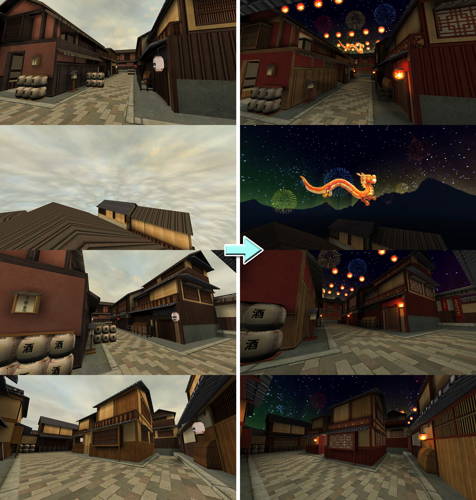
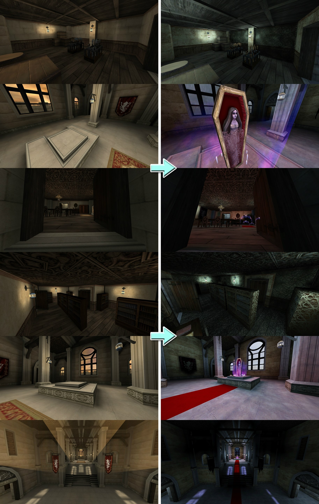
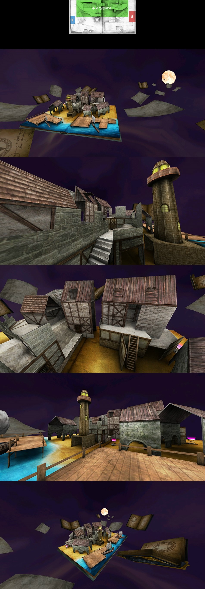

페이퍼맨
라이브 맵 테마 변형과 환경 제작


프로젝트 소개
기존 맵의 구조를 유지한 시즌·지역별 환경 변형과 신규 맵 테마 제작에 참여했습니다.
담당 업무
- 교토 맵 텍스처 수정 및 이펙트 추가를 통한 중국 축제 테마 변형
- 고성 맵에 텍스처·이펙트·모델을 추가해 호러 버전 제작
- 팝업북 맵 제작, 통 텍스처와 점프대 구성
- 항구 맵에서 원거리 알파를 적용한 수평선 구현
기여 범위 및 사용 리소스
- 교토와 고성은 기존 서비스 맵의 구조를 재사용.
- 기존 에셋과 신규 제작 에셋별 개별 작성자는 미확인.
기술 및 툴
Gallery
라이브 맵의 테마 변형
같은 구조를 살린 텍스처·색·환경 효과 적용 사례입니다.




엔진 제약에서 수평선 구현
바다와 스카이박스 경계는 원거리 알파 처리를 사용했습니다.